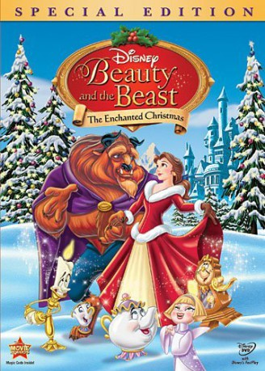

#7831 Die Schöne und das Biest: Weihnachtszauber
Alternativ: Beauty and the Beast: The Enchanted Christmas
 
 IMDB-Wertung: 6.1 / 10
IMDB-Wertung: 6.1 / 10  Metascore: 0
Metascore: 0 
Belle prepares the castle for Christmas against Beast's wishes, trying to bring him happiness for the season. Forte, a pipe organ, fears that Belle's plans may eventually bring about an end to the curse... the curse that brought him more importance in the Master's life. Forte uses Fife, a flute who desperately wants a solo, to destroy Belle's plans and get rid of her.
Jahr: 1997
Dauer: 63 Minuten
FSK: 0
Land: USA Studio: Walt Disney Home VideoTonspuren:
Untertitel:
Auflösung: SD (800x448) Größe: 924 MB
Genre: Musik, Fantasy, Animation/Trick, Familie, Musical, Weihnachten
Regisseur: Andrew Knight
Drehbuch: Eric Red
Soundtrack: Rachel Portman
Darsteller:
- Paige O'Hara als Belle
- Robby Benson als Beast
 Jerry Orbach als Lumiere
Jerry Orbach als Lumiere David Ogden Stiers als Cogsworth
David Ogden Stiers als Cogsworth- Bernadette Peters als Angelique
 Tim Curry als Forte
Tim Curry als Forte Haley Joel Osment als Chip
Haley Joel Osment als Chip Frank Welker als Phillippe / Sultan
Frank Welker als Phillippe / Sultan Jeff Bennett als Axe / Poke
Jeff Bennett als Axe / Poke Jim Cummings als Various
Jim Cummings als Various Kath Soucie als Enchantress
Kath Soucie als Enchantress Paul Reubens als Fife
Paul Reubens als Fife Angela Lansbury als Mrs. Potts
Angela Lansbury als Mrs. Potts- Jeff Blumenkrantz als Chorus (singing voice)
- Victoria Clark als Chorus (singing voice)
 Gregg Edelman als Chorus (singing voice)
Gregg Edelman als Chorus (singing voice)- Judy Kaye als Chorus (singing voice)
- Howard McGillin als Chorus (singing voice)
 Bobbi Page als Chorus (singing voice)
Bobbi Page als Chorus (singing voice)- Carmen Twillie als Chorus (singing voice)
- Andrew Keenan-Bolger als Chip (singing) (uncredited)
- Bill Cantos als Chorus (singing voice)
- Kevin Dorsey als Chorus (singing voice)
- Rebecca Luker als Chorus (singing voice)
- Gene Miller als Chorus (singing voice)
- Lauren Mitchell als Chorus (singing voice)
- Wilbur Pauley als Chorus (singing voice)
- Andrea Robinson als Chorus (singing voice)
- Sharon Scruggs als Chorus (singing voice)
- Ted Sperling als Chorus (singing voice)
- Martin Vidnovic als Chorus (singing voice)
- Maxine Waters Willard als Chorus (singing voice)
- Oren Waters als Chorus (singing voice)
Datei: X:\Kinder Disney HD\Schöne und das Biest\Schöne und das Biest Weihnachtszauber, Die (1997, FSK0, 800x448).mp4 seit 20.12.2017
Festplatte: Kinder-Filme+Trick
 Es gibt insgesamt 8 Filme in der Gruppe 'Kinder Disney HD\Schöne und das Biest'
Es gibt insgesamt 8 Filme in der Gruppe 'Kinder Disney HD\Schöne und das Biest'